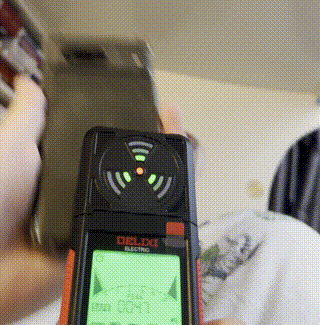

マルチフィールド電磁界測定器 | オリジナル、AI翻訳
最近、5G基地局が人体に有害であるという噂を耳にし、調べてみることにしました。そのため、電磁場を測定するマルチフィールドEMFメーターを購入しました。EMFとは電磁場を意味します。
TP-LINK AX3000 WiFiルーターからの様々な距離でEMFレベルを測定するテストを行いました。結果は下記の通りです。1
EMFメーターには、磁場、電場、無線周波数の3つの測定モードがあります。WiFiルーターのテストでは、無線周波数モードを使用しました。
携帯電話を上下に動かすことで磁場が発生し、EMF（電磁場）メーターで検出できます。2
初期実験の結果、私の周囲の無線周波数レベルは非常に低く、安全な環境であることが示唆されました。これは、山の下にあるマンションに住んでいるため、4Gと5Gの受信状態が悪いことが原因であると考えられます。より広範な結論を出すには、様々な場所でさらにテストを行う必要があります。
ある時点での電磁場の測定値が低いからといって、常に低いレベルが保証されるわけではありません。他の日には測定値が高くなる可能性があります。
 TP-Linkルーター付近
TP-Linkルーター付近
 TP-Linkルーターから10cm
TP-Linkルーターから10cm
 TP-Linkルーターから30cm離れた場所
TP-Linkルーターから30cm離れた場所
 私の寝室、TP-Linkルーターから3メートル離れた場所
私の寝室、TP-Linkルーターから3メートル離れた場所
 磁場